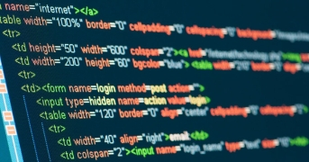

Front End Development

ფრონტ ენდ დეველოპმენტი ერთ-ერთი მოთხოვნადი მიმართულებაა მსოფლიო ბაზარზე. კურსის ფარგლებში მსმენელს შესაძლებლობა ექნება დაეუფლოს და გაერკვეს ფრონტ ენდ დეველოპმენტის პრინციპებში და შეიძინოს ყველა საჭირო უნარი საკუთარი ვებ გვერდის ასაწყობად და ამ მიმართულებით კარიერის შესაქმნელად.